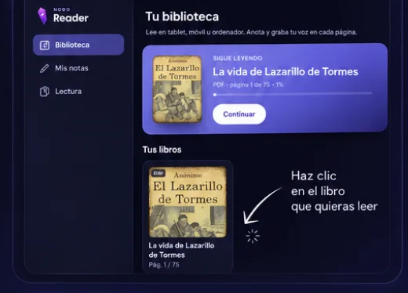
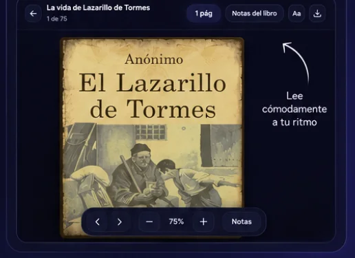
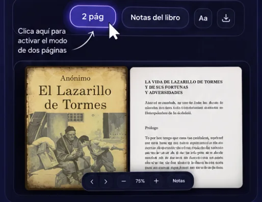
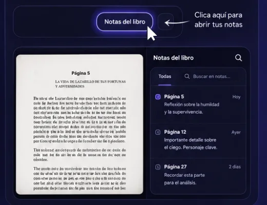
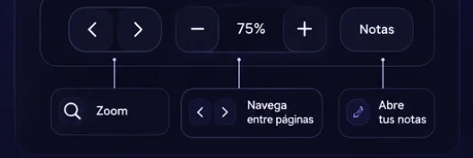

Tu biblioteca
Lee en tablet, móvil u ordenador. Anota y graba tu voz en cada página.
Tus libros
0 libros
PDF y EPUB funcionan directo. Para un MOBI, conviértelo antes a EPUB o PDF con Calibre.
Todo lo que has anotado
Mis notas
Guía de uso
Empieza a leer en segundos
Tus libros, tus notas y por dónde ibas se quedan en este dispositivo. En seis pasos tienes todo lo que hace falta saber.
-
1
Abre tu biblioteca
En «Biblioteca» encontrarás todos tus libros, listos para leer.

-
2
Entra en el libro
Se abre a una página para que empieces a leer a tu ritmo.

-
3
Activa el modo de dos páginas
Pulsa «2 pág» para verlo como un libro físico, con las dos hojas abiertas.

-
4
Añade y consulta tus notas
Guarda ideas y apuntes organizados por página. En el panel también puedes grabar tu voz.

-
5
Personaliza tu lectura
Ajusta el zoom, pasa de página y abre tus notas desde la barra inferior.

-
6
Todo en un solo lugar
Tus libros, notas y progreso se guardan automáticamente en tu dispositivo.
Retoma donde lo dejasteSin registro ni complicacionesEn móvil, tablet y ordenadorExporta tus notas cuando quieras